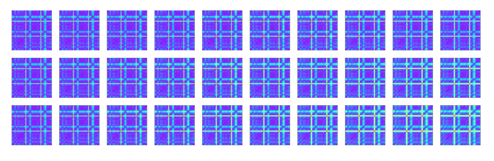

基于轻量化模型优化的ECG-ID算法研究

姓名：杨傲伟
指导教师：张烨菲
2024年3月13号
目录
- 背景以及意义
- 研究内容
- 已完成的内容
- 进度安排
背景以及意义
- 研究意义
- ECG-ID身份识别
- 轻量化
- 国内外研究动态

研究意义
背景
随着信息化的高速发展，基于生物识别技术的个人身份识别已在资料保密、医疗保险及金融安全等众多领域得到了广泛的发展和应用。
据美国市场调查机构Grand View Research在2023年发布的最新数据显示， 2022年全球生物识别技术市场规模为342.7亿美元，预测未来7年将以20.4%的复合年增长率持续扩大；
我国国家统计局、国家经济信息中心等权威部门的数据亦显示，我国生物识别技术的市场规模正在以远超24.8%的年复合增长率逐年扩大，并将于2025年达到930.5亿人民币的市场规模。
人脸、指纹、DNA等传统生物身份识别技术因其便捷性在日常生活中得到了广泛的应用。
然而，许多不法分子有目的地收集大量的生物特征数据，利用AI换脸、指纹复刻等违法行为进行盗窃和诈骗，传统生物身份识别方式正面临着前所未有的挑战。
因此，如何提升个体身份识别的安全性和隐私保护，在这些切实的危害出现之前防范于未然，成为亟待解决的问题。
生物特征识别技术
- 静态特征识别
- 行为特征识别
ECG-ID身份识别
- 心电（Electrocardiogra，ECG）信号是人体内部的重要生物电信号，不同于人脸和虹膜数据，心电数据属于人体内部的连续信号，具有难收集，难伪造的特点。
- 心电信号的性质
- 唯一性
- 持久性
- 时间连续性 与人脸识别等传统生物识别方法相比，基于ECG信号的生物识别 (ECG Identify, ECGID) 具备具有“活体”识别的高防伪能力，在生物识别领域受到越来越多的关注。而且可穿戴式、便捷的采集设备的发展为心电数据采集带来了便利。
心电信号的采集方式
- in-the-person 即植入型设备
- on-the-person 即需与受测个体身体连接的设备
- off-the-person 即指尖、可穿戴等非体表连接的设备

One More Thing
为何需要轻量化模型
身份识别在很多场景下需要快速准确地进行识别，然而深度学习模型通常具有大量参数，导致训练和识别过程非常耗时。 为解决这一问题，研究轻量化模型变得至关重要。
轻量化的方式
- 减少参数数量
- 简化网络结构
- 压缩技术
轻量化的意义
- 提高身份识别系统的响应速度，还可以降低能耗和硬件要求，适用于移动设备、嵌入式系统等场景。
- 通过研究和优化轻量化模型，可以在保证准确性的前提下提升身份识别系统的效率和实用性，推动智能生物识别技术在各个领域的广泛应用。
研究内容
- ECG信号的预处理研究部分
- ECG深度学习识别模型的实现部分
- 利用已有轻量化模型优化学习速度研究部分
ECG信号的预处理研究部分:去噪
- ECG信号主要有三种噪声
- 基线漂移：噪声使心电信号的基线位置发生变化，呈上下震荡，主要是由人体环境的各种不确定因素以及心电信号的采集过程中电极和人体接触缝隙造成的，是最复杂的一种噪声，频率一般小于1Hz。
- 工频干扰：由电力系统产生的干扰，即心电信号采集仪器的电源电压产生的噪声干扰。通常工频干扰所产生的噪声频率也为50Hz。这类噪声对ECG信号的影响最大。
- 肌电干扰:一般为人体肌肉在颤动时产生的多种复杂生物电信号，肌电干扰的频率范围基本覆盖了ECG信号大部分频段，因此无法直接使用滤波器来去除肌电干扰，会造成原始信号的缺失。
ECG信号的预处理研究部分:去噪
中值滤波
- 中值滤波法是一种非线性平滑技术，它将每一像素点的灰度值设置为该点某邻域窗口内的所有像素点灰度值的中值。
- 我们通过将ECG信号进行中值滤波得出信号的总体的偏移的情况，也就叫做是基线。接着我们将原始信号减去基线信号得出基线稳定的过滤ECG信号。
ECG信号的预处理研究部分:去噪
小波去噪
- 选用“db5”作为小波基对原始信号进行9尺度小波变换，滤除D1层和D2层的细节分量，其余层数小波系数通过软阈值公式对信号的阈值进行处理。
ECG信号的预处理研究部分:时频域转换处理
- 考虑到ECG一维信号的时间特征信息有限，为了提升后续模型的训练效果，我们将一维信号进行时频域转换，实现从1D时序信号到2D图片的转换，为后续识别供更加丰富的时频域、空间域的联合特征。这里的时频域转换，
- 我们采用了递归图和格拉姆差角场两种不同的方式，后续具体采用哪个图，根据学习的效果来定。
ECG深度学习识别模型的实现部分
- 对于传统的机器学习模型，数据的特征需要设计者针对其特性进行手动提取，而深度学习则可以自动提取每类数据中的不同特征，解决手动特征提取存在的问题同时又保证了模型高精度的识别准确率。 我们利用上一个阶段预处理生成的格拉姆图或者递归图进行身份识别的深度学习模型训练
- 具体的深度学习模型采用的是CNN的经典网络VGGNet。
- VGGNet在2014年由牛津大学计算机视觉组VGG (Visual Geometry Group) 提出。
- VGGNet的结构非常简洁，具有小卷积和，小池化核，通道数多，层数深，特征图宽的优点。
- VGGNet在图像的分类识别方面表现出色，这有利于我们对前一个阶段中生成的ECG信号2D图片数据集进行深度学习。
利用已有轻量化模型优化学习速度研究部分
- 虽然在实际应用中模型是预训练好的，但当有新用户注册的时候，我们需要对重新录入的数据进行重新训练，所以我们需要考虑到训练时间这个因素，训练时间是模型是否有落地应用价值的因素之一。
- 对于这个问题，我们采用基于MobileNet等已有的轻量化网络模型
- 使用适当的模型压缩技术
- 稀疏卷积
- 剪枝
已经完成的部分
- 信号预处理✅
- 信号去噪✅
- 一维时序信号的时频域转换✅
信号去噪
一维时序信号的时频域转换
- 格拉姆角场图结果
- 递归图结果

进度安排
进度
| 序号 | 时间 | 内容 |
|---|---|---|
| 1 | 2023.12.22-2023.12.28 | 选好毕业设计题目并准备相关资料 ✅ |
| 2 | 2023.12.29-2024.1.14 | 接受任务书 ✅ |
| 3 | 2024.1.15-2024.3.10 | 搜集资料，准备开题报告 ✅ |
| 4 | 2024.3.11-2024.3.17 | 开题报告会 |
| 5 | 2024.3.18-2024 3.25 | 心电信号消噪处理的实现 |
| 6 | 2024.3.26-2024 4.24 | 轻量级的ECG识别任务实现 |
| 7 | 2024.4.25-2024.5.12 | 撰写毕业论文 |
| 8 | 2024.5.13-2024.5.23 | 论文审核及查重 |
| 9 | 2024.5.24-2024.5.28 | 论文自查、专家抽查论文 |
| 10 | 2024.5.29-2024.6.7 | 答辩报告会 |